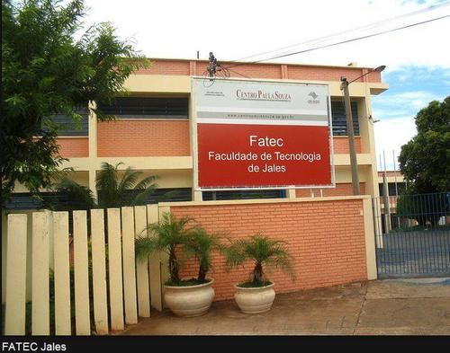

Fatec Jales
A Faculdade de Tecnologia de Jales - Prof. José Camargo é uma instituição de ensino superior público que pertence ao Centro Estadual de Educação Tecnológica Paula Souza (CEETEPS).
A Fatec de Jales possui 2 processos seletivos por ano, havendo 40 vagas para os quatro cursos disponíveis, sendo o Agronegócio, Gestão Empresarial e Sistemas para Internet à noite e Análise e Desenvolvimento de Sistemas de manhã, cada curso dura 3 anos.
A Fatecjales foi colocada entre as melhores do país segundo o MEC.
Site da Fatec: www.fatecjales.edu.br/
